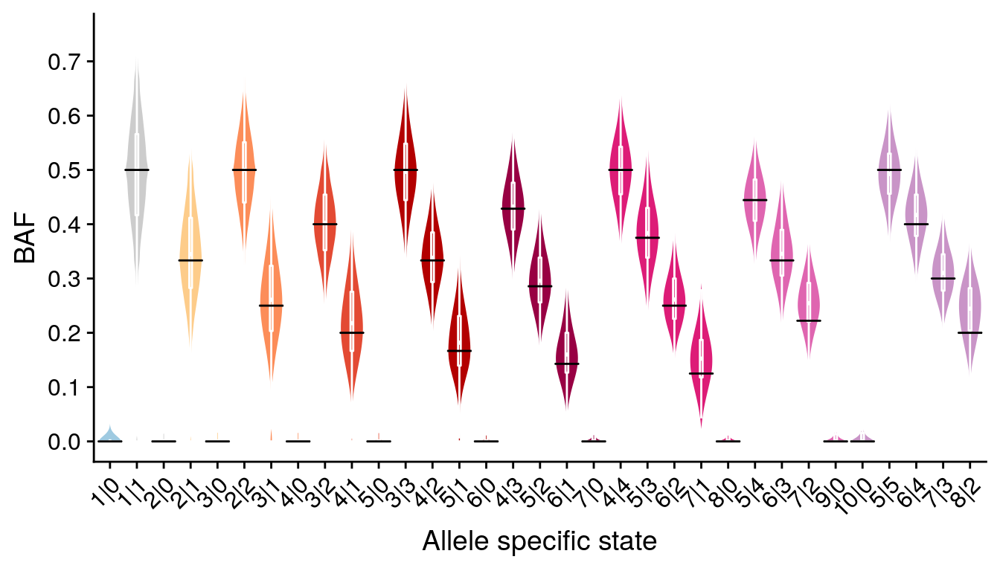
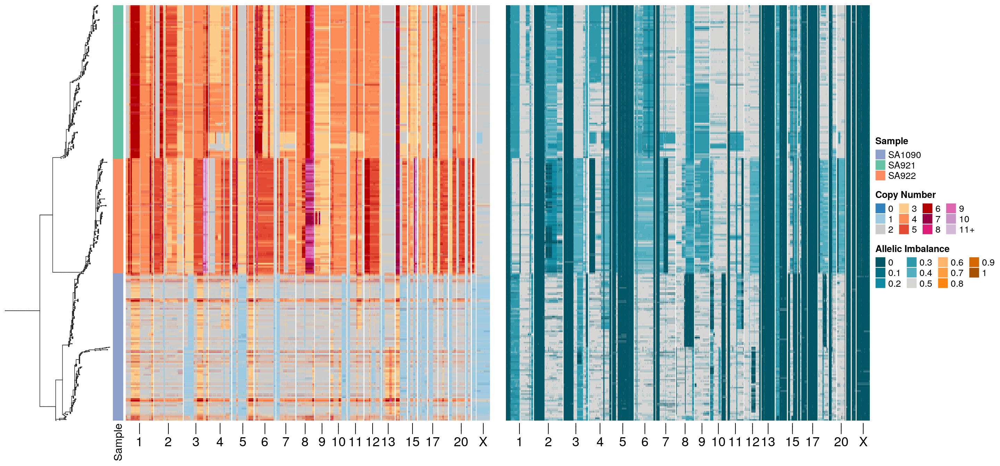

Evolutionary tracking of allele-specific cancer haplotypes at single-cell resolution
2021-05-11
Section 1 Figure 1
1.1 Stats
1.2 Single cell example


1.3 Unphased vs phased

1.4 SNVs

1.5 BAF violin
1.6 Heatmaps
## [1] "2295"
1.7 Main Figure

1.8 SNVs in 8q and 10p

## # A tibble: 224 x 8
## chr start end state state_min BAF state_phase copy
## <chr> <int> <int> <int> <dbl> <dbl> <chr> <dbl>
## 1 8 2000001 2500000 2 1 0.481 Balanced 2.21
## 2 8 2500001 3000000 2 1 0.484 Balanced 1.93
## 3 8 3000001 3500000 2 1 0.494 Balanced 1.96
## 4 8 3500001 4000000 2 1 0.362 Balanced 1.60
## 5 8 4000001 4500000 2 1 0.488 Balanced 1.96
## 6 8 4500001 5000000 2 1 0.495 Balanced 1.94
## 7 8 5000001 5500000 2 1 0.489 Balanced 1.96
## 8 8 5500001 6000000 2 1 0.5 Balanced 1.99
## 9 8 6000001 6500000 2 1 0.506 Balanced 2.01
## 10 8 8000001 8500000 2 1 0.5 Balanced 1.92
## # … with 214 more rows